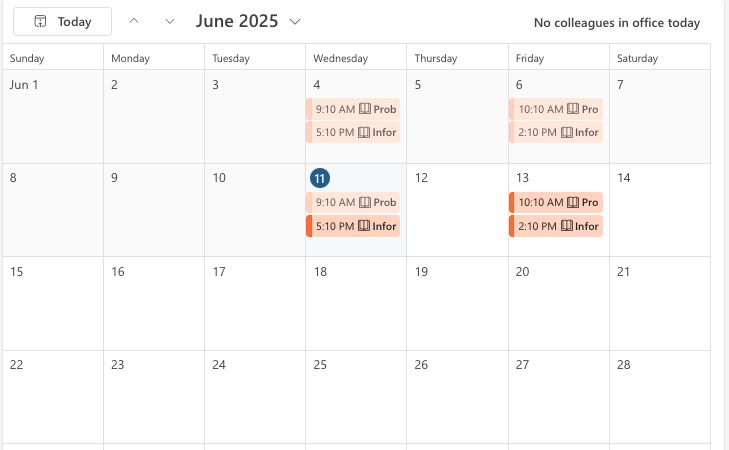

About Me:
My name is Rahmat Amiri, and I am currently studying Software Development at the University of South Australia. I have been living in Australia for the past three years and have enjoyed every moment of this life-changing journey. Before starting my degree, I successfully completed a university preparatory program at the University of Adelaide, which helped me build a strong academic foundation. I have always had a deep interest in technology and how it shapes the world around us. Web development, in particular, excites me because of its creativity, problem-solving, and real-world applications. I enjoy learning new programming languages, designing user-friendly interfaces, and building projects from scratch. My goal is to become a skilled software developer who creates practical and meaningful solutions for people and businesses.
My First-Year Experience :
Through my university studies and personal projects, I have gained valuable hands-on experience in software development. I have worked on building simple websites, connecting them to databases, and applying responsive design principles. I have also participated in group assignments that helped me develop teamwork and version control skills using Git. By solving coding challenges and debugging different types of errors, I have improved my logical thinking and problem-solving abilities. These experiences have strengthened my interest in technology and motivated me to keep learning and growing as a developer.
My Learning Goals :
My main learning goal is to become a skilled full-stack web developer. I am focused on mastering both front-end and back-end technologies, including HTML, CSS, JavaScript, Python, and SQL. I also aim to gain experience with frameworks like React and Django to build dynamic, user-friendly web applications. I want to strengthen my understanding of software engineering principles, improve my coding efficiency, and develop the ability to design scalable and secure systems. In t he long term, my goal is to contribute to real-world software projects and prepare myself for a professional career in the tech industry.
Gallery :
The university with a green environment features lush trees, extensive grass lawns, and vibrant plant life that create a peaceful and inviting atmosphere. These natural elements not only enhance the campus's aesthetic appeal but also provide shade, improve air quality, and support biodiversity. Walking through tree-lined pathways and open grassy areas offers students and staff a tranquil space to relax, study, or socialize outdoors. Such environments promote physical and mental well-being by offering a soothing escape from busy academic routines. Trees and greenery also help in reducing noise pollution and regulate campus temperatures naturally. Many universities take pride in maintaining well-kept gardens, flower beds, and natural landscapes that encourage environmental appreciation and biodiversity conservation. By preserving and increasing green coverage, these campuses foster a sense of harmony with nature, making the university a healthier, more sustainable place for everyone. This focus on greenery highlights the importance of a natural, eco-friendly campus environment.
The university library is a vital resource for students and faculty, offering access to a vast collection of books, journals, and digital resources. It provides a quiet space for study, research, and collaboration, fostering academic growth and intellectual exploration. Modern libraries also offer technological tools like computers and printing services. Friendly staff assist visitors in locating materials and using resources effectively. Overall, the university library is a cornerstone of academic life, supporting learning, innovation, and scholarly achievement.
The university labs are essential centers of innovation and hands-on learning. They provide students with practical experience in their field of study, fostering curiosity and problem-solving skills. Equipped with advanced instruments and technology, labs enable experimentation, research, and discovery. They encourage collaboration among students and faculty, creating a vibrant environment for knowledge exchange. These labs also serve as testing grounds for new ideas and prototypes, contributing to scientific progress. Overall, university labs are vital for developing skilled professionals and advancing academic research, making them a cornerstone of higher education.
Timetable:
As a full-time Software Development student at the University of South Australia, my weekly schedule is a balanced mix of lectures, tutorials, and self-study. I usually attend 3 to 4 classes each week, covering core subjects like Programming, Web Development, Database Design, and Software Engineering Principles. Mornings are often dedicated to lectures, while afternoons are reserved for coding practice, lab sessions, or group assignments. I also set aside time every evening to review materials and work on projects. My weekends are mostly free, which I use to revise, explore tech topics, or relax and recharge.
Contact :
If you would like to get in touch or collaborate on a project, feel free to reach out!
- Email_ID: amiry005
- Phone Number : 047464423